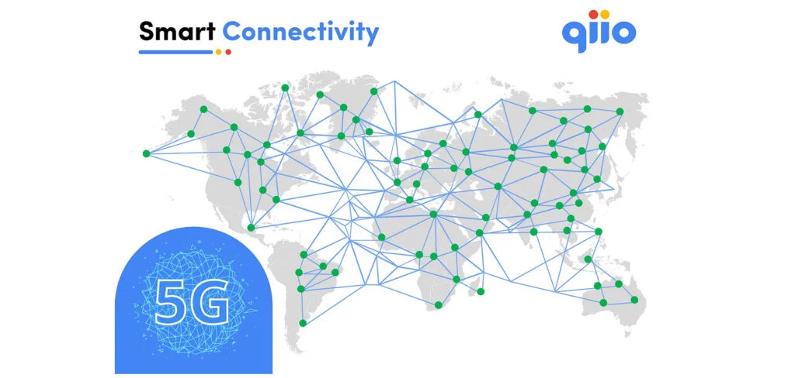

CHANCE5G is the initiative of the umbrella organisation of the
telecommunications industry asut and its members, in particular Swisscom, Sunrise, Ericsson, Huawei and
Cellnex. The aim is to inform about the topic of 5G and to establish it as a standard for a progressive
Switzerland.
Felix Adamczyk has been appointed as an ambassador for this initiative.
Read qiio’s use case here: LINK
https://chance5g.ch/de/storys/mit-qiio-smart-connectivity-und-5g-iot-zur-digitalen-transformation/